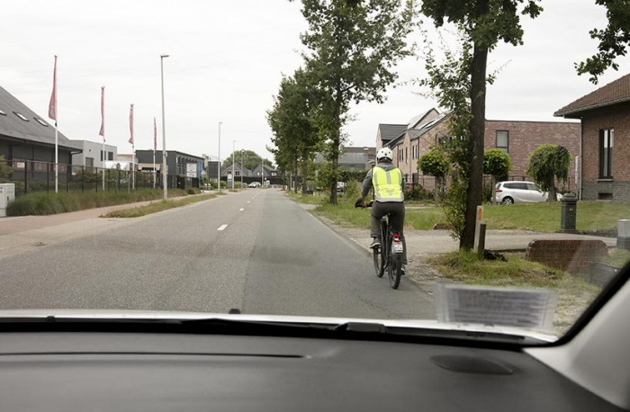

Je rijdt binnen de bebouwde kom en haalt een speedpedelec-rijder in. Hoeveel afstand moet je houden tussen je wagen en de speedpedelec-rijder?

- Minstens 1 meter.
- Minstens 1,5 meter.
- Minstens 2 meter.
Binnen de bebouwde kom moet je minstens 1 meter afstand houden van een voetganger, fietser of bromfietser als je hem voorbijrijdt, buiten de bebouwde kom is dat 1,5 meter. Die regel geldt ook ten aanzien van een fietser of bromfietser die zich op het fietspad bevindt.